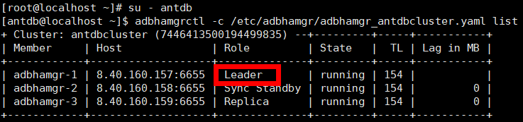

在执行数据库备份前必须开启归档模式，否则将会导致备份失败。
注意事项
本节操作如无特殊说明均以AntDB 7.0版本为例进行，数据库版本不同操作可能存在差异，请以实际为准。
操作步骤
如果是集中式的单机，通过修改配置文件参数开启归档模式。
- 使用PuTTY，登录AntDB数据库主机并切换至root用户。
- 创建存放归档日志（WAL日志）的路径，后续操作以/mnt/server/archivedir/路径为例。
mkdir -p /mnt/server/archivedir/
- 赋予运行数据库的操作系统用户antdb读写权限。
chmod 750 /mnt/server/archivedir/ chown antdb:antdb /mnt/server/archivedir/
- 执行su - antdb切换至用户antdb。系统回显示例如下：
[root@localhost ~]# su - antdb [antdb@localhost ~]$
- 使用用户antdb登录数据库。
adb -d antdb -U antdb -p 6655
- 执行show config_file;查询postgresql.conf文件所在路径。系统回显示例如下：
postgres=# show config_file; config_file --------------------------------------- /home/antdb/app/data/postgresql.conf (1 row) - 在键盘上按“Ctrl+d”退出登录用户antdb，进入AntDB数据库主机。
- 进入postgresql.conf文件，这里以/home/antdb/app/data/postgresql.conf路径为例。
vi /home/antdb/app/data/postgresql.conf
- 找到并修改postgresql.conf文件中的wal_level 、archive_mode和archive_command参数，如下所示：
wal_level = replica # minimal, replica, or logical archive_mode = on # enables archiving; off, on, or always archive_command = 'cp %p /mnt/server/archivedir/%f' # command to use to archive a logfile segment

- 将wal_level设置为replica。
- 将archive_mode设置为on。
- 将archive_command设置为 'cp %p /mnt/server/archivedir/%f'，并确保归档日志的路径是单个路径。
- archive_command只支持cp命令，其他命令不支持。
- 修改postgresql.conf文件时，请修改文件中已存在的字段值，禁止在文件中自行新增同样的字段，否则将会影响恢复任务。
- 修改完毕后，按Esc，并输入:wq!保存并退出。
- 重启数据库。-D参数代表客户自行指定的数据目录。
adb_ctl restart -D /home/antdb/app/data

重启数据库期间，数据库业务会中断，请谨慎操作。
如果是集中式的集群，通过执行数据库命令开启归档模式。
- 查询集群主节点和非主节点。
- 使用PuTTY登录集群任一节点，然后输入su - antdb命令切换至运行数据库的操作系统用户。
- 执行adbhamgrctl -c /etc/adbhamgr/adbhamgr_antdbcluster.yaml list（/etc/adbhamgr/adbhamgr_antdbcluster.yaml请根据实际路径和实际文件名称替换）命令，查询集群的主节点，即“Role”为“Leader”的节点，“Role”为其他值的节点为非主节点。如下图所示：

- 停止所有非主节点AntDB服务，以下操作要依次在每个非主节点执行。
- 使用PuTTY登录集群非主节点，然后输入su - antdb命令切换至运行数据库的操作系统用户。
- 执行systemctl stop adbhamgr命令停止AntDB服务。
- 配置集群主节点并重启AntDB服务。
- 使用PuTTY，登录集群主节点的AntDB数据库主机。
- 执行su - root切换至root用户，创建存放归档日志（WAL日志）的路径，后续操作以/mnt/server/archivedir/路径为例。
mkdir -p /mnt/server/archivedir/
- 赋予运行数据库的操作系统用户antdb有读写权限。
chmod 750 /mnt/server/archivedir/ chown antdb:antdb/mnt/server/archivedir/
- 执行su - antdb切换至用户antdb。系统回显示例如下：
[root@localhost ~]# su - antdb [antdb@localhost ~]$
- 使用用户antdb登录数据库。
adb -d antdb -U antdb -p 6655
- 依次执行以下3条命令，开启数据库归档模式。
alter system set wal_level= 'replica';
alter system set archive_mode= 'on';
alter system set archive_command ='cp %p /mnt/server/archivedir/%f';
archive_command只支持cp命令，其他命令不支持。
- 在键盘上按“Ctrl+d”退出登录用户antdb，进入AntDB数据库主机。
- 重启AntDB服务。
systemctl restart adbhamgr
重启集群主节点AntDB服务时，数据库业务会中断，请谨慎操作。
- 启动所有非主节点AntDB服务，以下操作要依次在每个非主节点执行。
- 使用PuTTY登录集群非主节点，然后输入su - antdb命令切换至运行数据库的操作系统用户。
- 执行systemctl start adbhamgr命令启动AntDB服务。
- 依次配置所有非主节点并重启AntDB服务。使用PuTTY依次登录每个非主节点，并执行3.b到3.h。